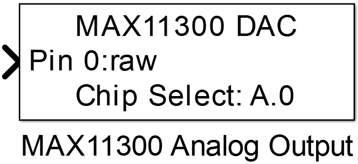
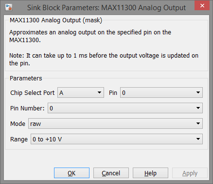

10.7.5. MAX11300 Analog Output
Outputs a variable analog voltage on the specified pin of the MAX11300.
10.7.5.1. Library
/SPI
10.7.5.2. Description
{kind=link}
This block configures a pin of the MAX11300 to output an analog voltage which is controlled by the block’s input port. The minimum and maximum output voltage can be configured via mask parameter Range.
10.7.5.3. Data Type Support
The block’s input port accepts data type of int16 or single. In int16 (Mode = raw) the minimum voltage output is given at -2048 and the maximum voltage at +2047 even if the selected range has no negative voltage. In relative mode the input can vary between 0 and 1 for minimum and maximum output.
10.7.5.4. Parameters and Dialog Box
Chip Select Port and Pin
Configuration of the MCU Pin the device’s chip select input is connected to.
Note
The chip select pin must be the same as in the corresponding MAX11300 Config block
Pin Number
Specifies the pin of the MAX11300 which should be used as analog output.
Mode
Specifies the input data type to int16 (raw) or single (relative)
Range
Configures the output voltage range of the specified pin.
Note
In order to output negative voltages the MAX11300 must be supplied by -12V Vss and +12V Vdd.